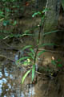
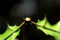

Common name : Sea holly
Common name in Tamil : Mulli
Common name in Telugu : Alchi, alisi
Common name in Singhalese : Ikili, kattu-ikili


Diagnostic characters
Botany & morphology
Regeneration
Reproductive biology
Ecology
Distribution
Uses
Sprawling herb to shrub, up to 2 m height; aerial roots developed from reclining stem. Leaf spiny. Inflorescence spicate, terminal. Flowers attractive bluish.
Leaves simple, opposite, decussate; petiole short with 2 stipule-like spines at base; lamina pinnatifid (some times oblong or ovate to lanceolate), lobes spiny tipped, 5 – 11 x 3 – 8 cm, glabrous, and shining.
Inflorescence terminal, bracteate spike, 5 – 20 cm long.
Flowers bisexual, zygomorphic, up to 4 cm long; bract 2, caducous; bracteoles 2, conspicuous and persistent; calyx 4-lobed; corolla bluish with short tube; stamens 4, didynamous, filaments stout, curved, anther 1-celled, oblong, bearded; ovary 2-celled, style slender, stigma bifid.
Fruits capsule oblong 2.5 cm long, ovules 4, opening explosively to release the seeds.
Germination hypogeal and also by vegetative growth.
Pollination by both birds and insects. The seeds release is explosive and propelled away with a spinning action like a discus, dispersed up to about 2 m.
Common along the coasts in tidal swamps and along the banks of creeks, estuarine islands and tidal rivers. Ecologically, it is found as a formation of back mangroves in saline zones, often described as a weed and even as a pioneer species.
India to the Western Pacific (New Caledonia), tropical Australia, and the Philippines.
It is used as a hedge plant and also forms a good fence. Leaf extract is used for relieving rheumatism and neuralgia; fruit pulp is used as blood purifier and for dressing boils, litter is used for cattle and roof thatching.
Tomlinson, P.B. 1986. The botany of mangroves. Cambridge University press, Cambridge, pp. 1 - 413.
Banerjee, L.K., Sastry, A.R.K., & Nayar, M.P. 1989. Mangroves in India, Identification manual. Botanical survey of India, pp. 1 - 113.
Blasco, F. 1975. Les Mangroves de l’Inde (The mangroves of India). Institut Français de Pondichéry, Travaux de la Section Scientifique et Technique. All India Press. Pondicherry. 14(1) : 1 - 175.
Top of the page